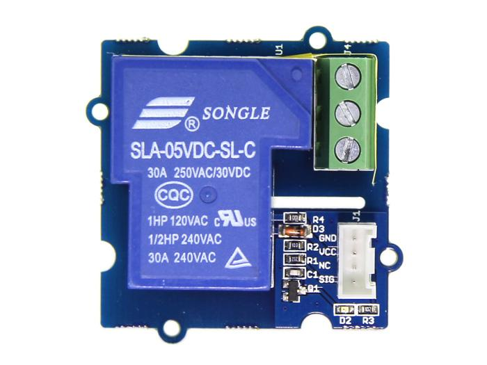
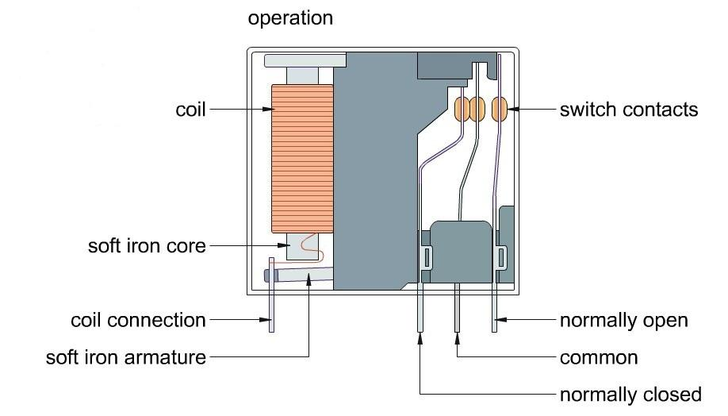
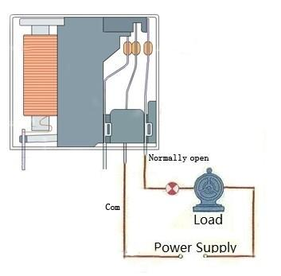

The SPDT Relay(30A) is a high quality Single Pole Double Throw Relay(SPDT).The Relay consists of a coil, 1 common terminal, 1 normally closed terminal, and one normally open terminal. When the coil of the relay is at rest (not energized), the common terminal and the normally closed terminal have continuity. When the coil is energized, the common terminal and the normally open terminal have continuity. This relay's coil is rated up to 5V and the contact is rated up to 30A (@250VAC, 30VDC).You can use it to control high current devices.
Model:ACT05161P

| Item | Min | Typical | Max | Unit |
|---|---|---|---|---|
| working Voltage | 4.75 | 5.0 | 5.25 | VDC |
| Current | 185 | mA | ||
| Pull-In Voltage(Max) | 3.75 | VDC | ||
| Operation Time(Max) | 15 | ms | ||
| Release Time(Max) | 10 | ms | ||
| Operating Ambient Temperature | -25 | - | 70 | °C |
Why do we want to use a relay and do we really need to? Anytime you want to switch on/off a device which draws more current or works with a high voltage, you'll need to use a relay. That is to say, the relay is "a high voltage or current switch controlled by low voltage". The coil of an SPDT relay that we most commonly use draws very little current (the Grove - Relay supports 10A). Now, with this 30A relay, you can control much more high-current switch devices such as headlights, parking lights, horns, etc.
The SPDT Relay internal structure:

You may see that the common terminal and the normally closed terminal have continuity When the coil of the relay is at rest.
But when the coil is energized, the common terminal and the normally open terminal will have continuity.
Hardware Installation can refer to the following picture:

The coding to control this relay is the same as the Grove - Relay.
Good luck to you for controlling your air-condition or washing machine, with Arduino and the Grove - SPDT Relay(30A).
1.You should have got a raspberry pi and a grovepi or grovepi+.
2.You should have completed configuring the development enviroment, otherwise follow here.
3.Connection
4.Navigate to the demos' directory:
cd yourpath/GrovePi/Software/Python/
nano grove_spdt_relay.py # "Ctrl+x" to exit #
import time
import grovepi
# Connect the Grove SPDT Relay to digital port D4
# SIG,NC,VCC,GND
relay = 4
grovepi.pinMode(relay,"OUTPUT")
while True:
try:
# switch on for 5 seconds
grovepi.digitalWrite(relay,1)
print "on"
time.sleep(5)
# switch off for 5 seconds
grovepi.digitalWrite(relay,0)
print "off"
time.sleep(5)
except KeyboardInterrupt:
grovepi.digitalWrite(relay,0)
break
except IOError:
print "Error"
5.Run the demo.
sudo python grove_spdt_relay.py
Grove - SPDT Relay(30A) Eagle File
If you have questions or other better design ideas, you can go to our forum or wish to discuss.
Copyright (c) 2008-2016 Seeed Development Limited (www.seeedstudio.com / www.seeed.cc)